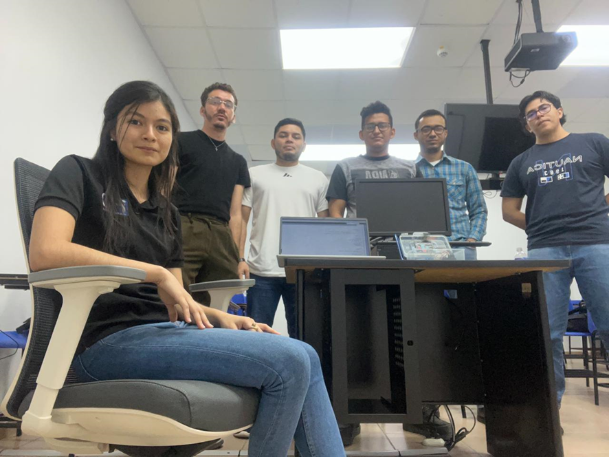
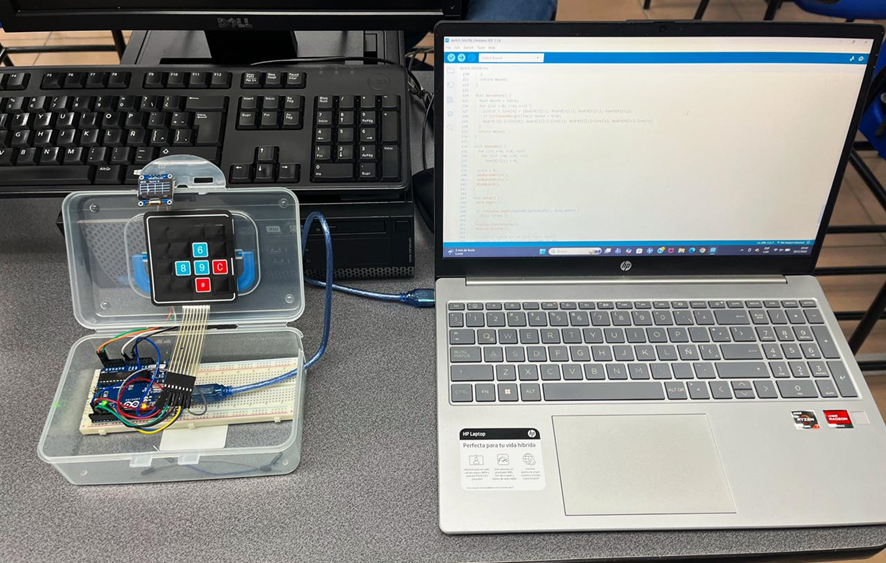

Resumen del proyecto
La asignatura de Arquitectura de Computadoras exige comprender la interacción entre procesador, memoria, buses y dispositivos de entrada y salida para resolver problemas concretos mediante sistemas digitales. En este contexto, el equipo desarrolló una versión funcional del juego 2048 sobre una pantalla OLED de 0.96 pulgadas, empleando un Arduino Uno como unidad central de procesamiento y un teclado matricial 4x4 como interfaz de usuario.
El proyecto permitió aplicar programación embebida, estructuras de datos, control de flujo, comunicación I2C y manejo de periféricos. De esta forma, se demuestra cómo el hardware y el software pueden integrarse de manera coordinada para construir un sistema interactivo con valor académico y técnico.

Información general
- Universidad: Universidad Tecnológica Centroamericana (CEUTEC)
- Carrera: Ingeniería en Electrónica
- Asignatura: Arquitectura de Computadoras
- Proyecto: Implementación del juego “2048” en pantalla OLED utilizando Arduino UNO
- Grupo de trabajo: #1
Integrantes
- Alison Nicole Orellana León — 62051020
- Josué Abraham Ulloa — 62211303
- Kevin Hernández — 61811772
- Leonardo Aarón Martínez Molina — 22251055
- Manuel Efraín Vásquez — 62241016
- Víctor David Lovo Zaldívar — 62111478
Descripción académica
Implementación de un sistema embebido interactivo basado en lógica matricial, procesamiento de entradas y visualización en tiempo real.
La propuesta consiste en desarrollar una versión operativa del juego 2048 dentro de un sistema embebido basado en Arduino Uno. El microcontrolador ejecuta la lógica del tablero, administra la memoria del juego y procesa las entradas realizadas por el usuario mediante un teclado matricial 4x4. Simultáneamente, la pantalla OLED recibe los datos mediante comunicación I2C y representa visualmente el estado actualizado del sistema.
Desde la perspectiva de Arquitectura de Computadoras, este trabajo demuestra cómo una unidad de procesamiento central interactúa con dispositivos de entrada y salida, cómo se organiza la información en memoria y cómo los algoritmos condicionan el comportamiento del sistema. La estructura de datos empleada para el tablero permite almacenar valores, validar movimientos, combinar fichas y actualizar el puntaje de manera eficiente dentro de las limitaciones del Arduino Uno.
Además del valor técnico, el proyecto fortaleció habilidades de análisis, programación, montaje electrónico, depuración y validación funcional, consolidando una experiencia de aprendizaje práctica y coherente con el nivel universitario de la asignatura.
Galería de imágenes
Montaje, funcionamiento y presentación final del proyecto.



Documentos
Consulta el informe académico completo del proyecto en formato PDF.
Video y código QR
El video demostrativo puede abrirse desde el enlace o escanearse desde el código QR.
Video demostrativo
Demostración del funcionamiento del juego “2048” implementado en Arduino Uno con pantalla OLED y teclado matricial.
Abrir videohttps://youtu.be/VtdngTWqn6c
Código QR del video
Escanea este código para abrir el video desde un dispositivo móvil.